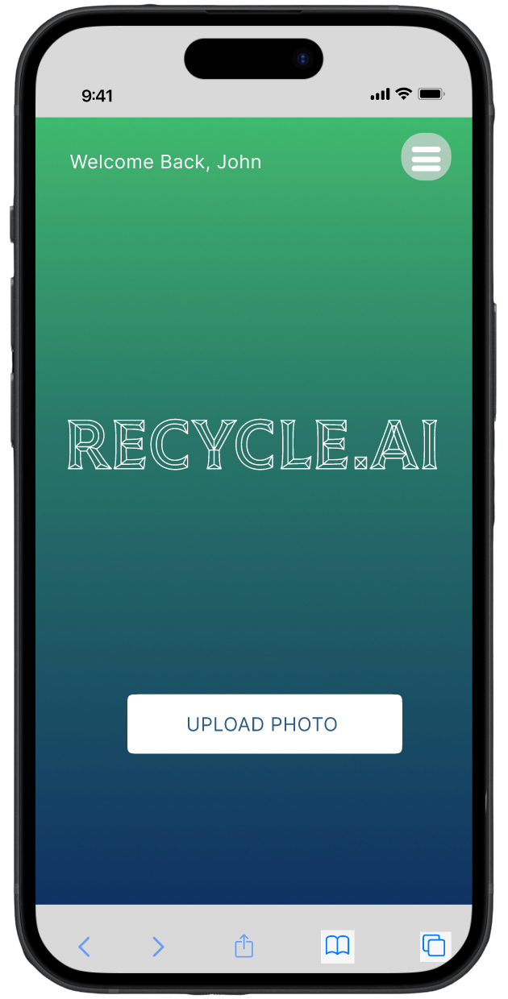
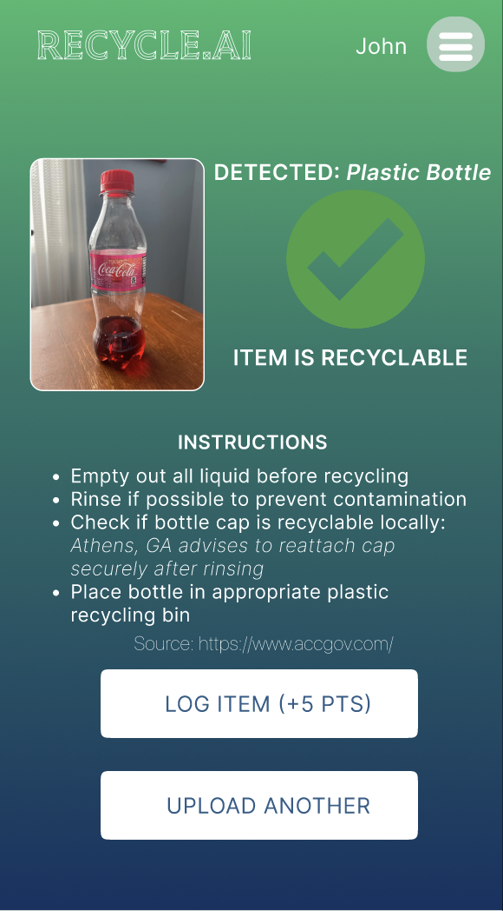
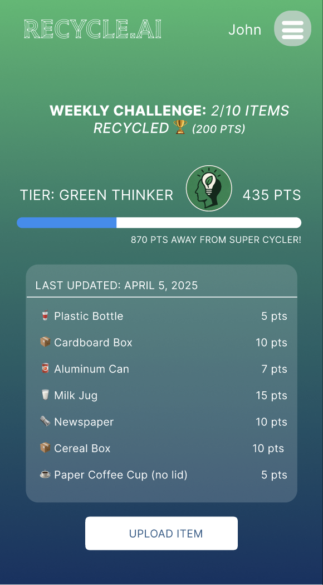
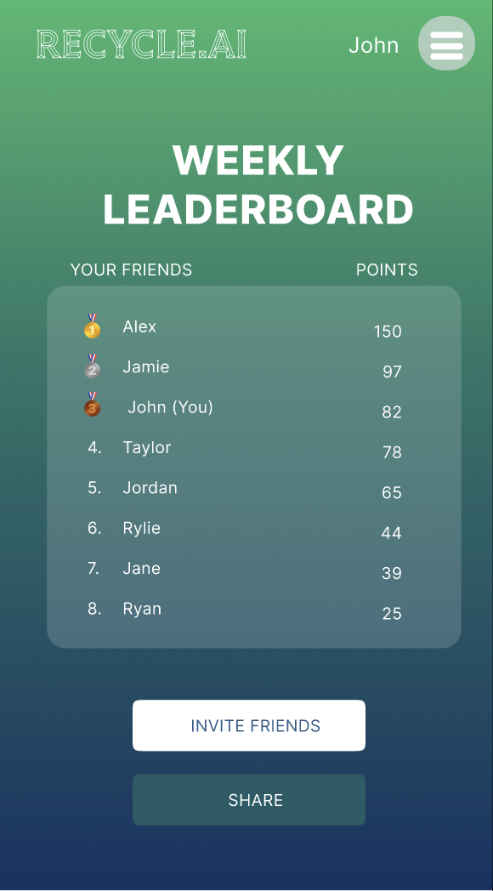

RECYCLE.AI
Snap, Sort, & Save The Earth — an AI-powered recycling assistant that helps users identify recyclable materials and build sustainable habits through real-time visual feedback and gamification.
View Prototype →
Problem
Recycling is confusing. Inconsistent labeling and a widespread lack of understanding about what materials are actually recyclable leads to high contamination rates and improperly sorted waste in homes, schools, offices, and public spaces.
Traditional signage is often overlooked or misunderstood, making it difficult for individuals to make the right recycling decisions. Without a user-friendly, accessible system to guide proper disposal, efforts to improve recycling rates and reduce environmental impact remain ineffective.
Mission
Design an accessible, interactive solution that reduces recycling confusion and encourages long-term sustainable habits.
- Use AI-powered image recognition to help users identify whether an item is recyclable by simply uploading a photo
- Provide clear visual feedback based on location-specific recycling guidelines
- Offer helpful next steps, including nearby drop-off sites or alternative disposal options
- Encourage habit-building through gamification with points, tiers, and weekly challenges
Process
Research & Needfinding
Conducted foundational research and interviews — including a NYC maintenance worker and UGA engineering student — to understand recycling habits, confusion around materials, and gaps in awareness. Created personas, empathy maps, and thematic analysis.
Ideation & Design Exploration
Synthesized POVs and How-Might-We statements, then explored 5 design directions — from mobile AR to smartwatch apps to smart bins. Narrowed to top 2: a smartwatch habit-tracker and an AI-powered website (final choice) for maximum accessibility.
Low-Fi & High-Fi Prototyping
Sketched key screens, created low-fidelity wireframes, then built an interactive high-fidelity Figma prototype. Defined 5 task levels from simple QR scanning to complex recycling guide review and AI-powered photo upload.
Usability Testing
Conducted moderated tests in-person and via Zoom across habit tracking, AI photo upload, and leaderboard tasks. Iterated on navigation clarity, feedback timing, and visual hierarchy based on participant feedback.
Solution
The final design is an AI-powered website accessible on any device. Users upload a photo of an item and receive instant visual feedback on whether it's recyclable, along with location-specific disposal guidelines and nearby drop-off options. The platform also features a personal impact dashboard, streak-based gamification with points and tiers, weekly challenges, and a community leaderboard to keep users engaged.



Impact
- Tackled recycling confusion — AI-powered image recognition let users quickly determine recyclability, addressing inconsistent labeling across homes, schools, and offices
- Provided location-specific visual feedback that guided correct disposal and reduced contamination
- Gamification features (points, tiers, badges, weekly challenges) successfully motivated ongoing engagement and consistent recycling behaviors
- Iterative usability testing refined navigation, clarity, and feedback mechanisms ensuring the system works across devices for all users
- Validated user-centered design approach — low- and high-fidelity prototypes combined with testing produced an intuitive, engaging final solution
Reflection
Leading this project as Team Lead taught me the value of combining innovation with practical implementation. Usability testing revealed that users wanted quick, actionable answers over dense information — which completely shifted our interaction model from information-heavy to action-first. User suggestions like social sharing, one-click navigation, and real-life rewards opened up exciting future directions.
Key takeaways: convenience and accessibility are non-negotiable, education needs to feel effortless, and gamification only works when paired with genuine utility. If I were to continue, I'd explore partnerships with local recycling facilities for region-specific data and investigate accessibility improvements for users with visual impairments.